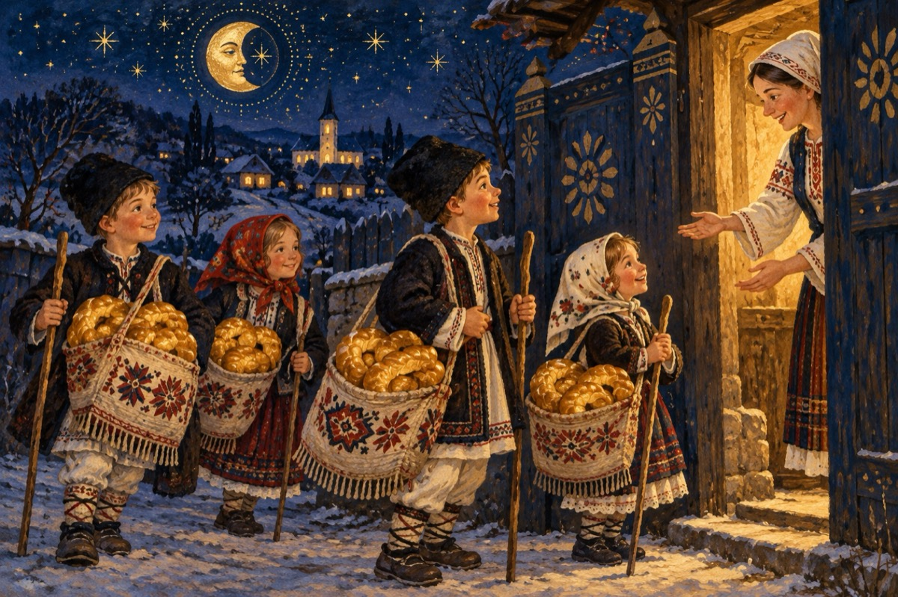

E bine de știut Poveste de sărbători
E bine de știut de copiii de azi,
Cum noi foștii copii, acum bătrâni,
Ne adunam în cete, ca niște camarazi
De sărbători eram ai satelor stăpâni!
Ne pregăteam din timp ținuta de urat,
Plugușorul spus nu ne diferenția.
Opinca sau bocancul fie de la oraș sau sat,
Pregătirea era cu-o săptămână înainte de-a ura!
Era o fierbere în sate de glasuri și alămuri,
În pregătirea plugurilor celor mari sau celor mici,
Ieșite în eter pe diferite tonuri,
Mai mare dragul, ne-ascultau bunicii și-ai noștri părinți!...
Anexele necesare pentru noi cei urători,
O traistă-n gât și-un băț, să ne-apărăm de câini.
Căci toate porțile și ușile erau deschise,
Și ne-așteptau în prag a lor stăpâni!
Gospodinele făceau colacii dând zor,
În forme mari și mici, după posibilități.
Încât se cuvenea câte-un colac la fiecare urător.
Și-așa ajungeai la mijloc de sat, încărcat de ,,greutăți”.
Renunțai la traista-ncărcată și-o lăsai la rude.
Pe-o sfoară puneai colacii primiți șirag!
Și prin troienele cât casa, reușeai la fiecare a pătrunde.
Unde gospodarii ieșeau și ne-așteptau cu drag.
Nu rămânea vreo casă neurată de plugari,
Chiar la bătrânii care-ți dădeau un ban și-o nucă.
Mergeai la fiecare și-i urai
Nu renunțai la ei s-ajungi după atâta muncă!
Așa era de sărbători, în sat la mine și la tine și la toți,
Peste tot era deschis pentru urători.
Nu se fereau și nu aveau ca astăzi teamă de hoți
Și trăiam în plină armonie aceste sărbători.
Vasile Groza